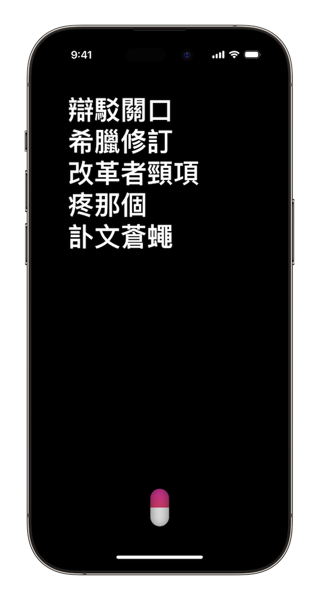
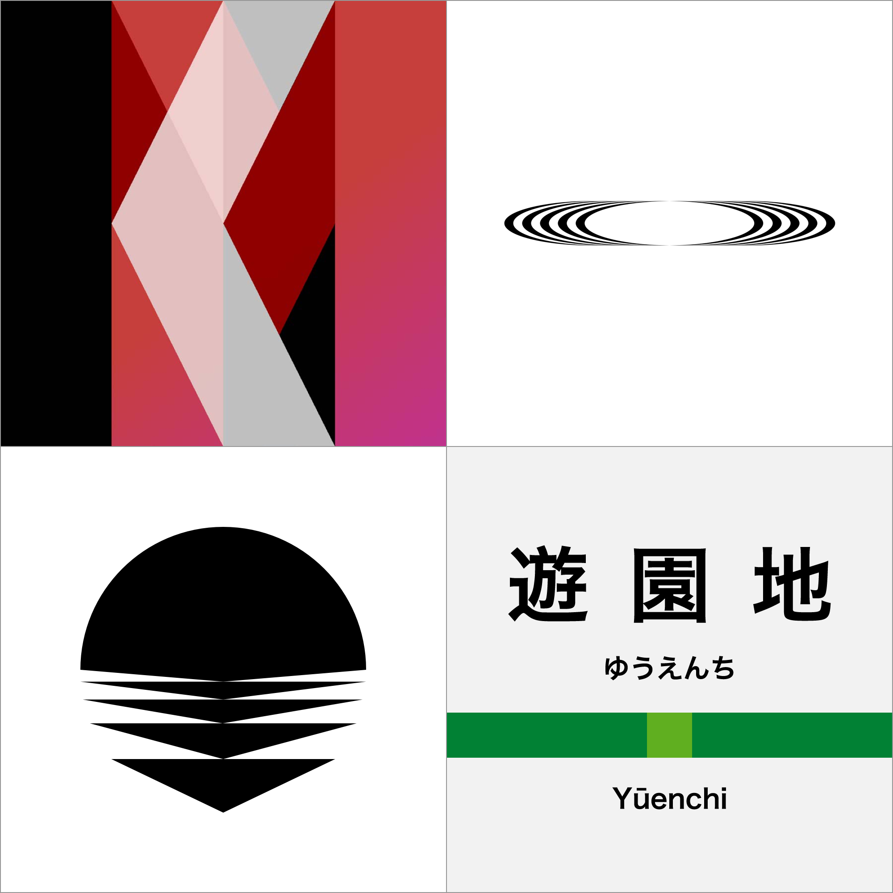

Kusa (born Zhang Xingtian) is a Beijing-based software engineer, independent developer, and art & design amateur.
Kusa writes kusai Chinese articles.
Find him on this meta verse.
Software Engineer
Kusa works at Douban as a backend engineer mainly using Python.
Independent Developer
Kusa is an Apple developer who designed and programmed experimental applications. Among his creations is Pink Pill, a poem generator.
Pink Pill has a web demake version.
Art & Design Amateur
Kusa has been working on contemporary poetry, digital art and graphic design. He has self-published several poetry collections in different forms.
The latest work is So-so, a Chinese poetry game for Nintendo® Game Boy™.

He designs logos and icons for his university and friends.
He writes kusai articles. His fiction, The Quizzer, has been published on Gamecores.